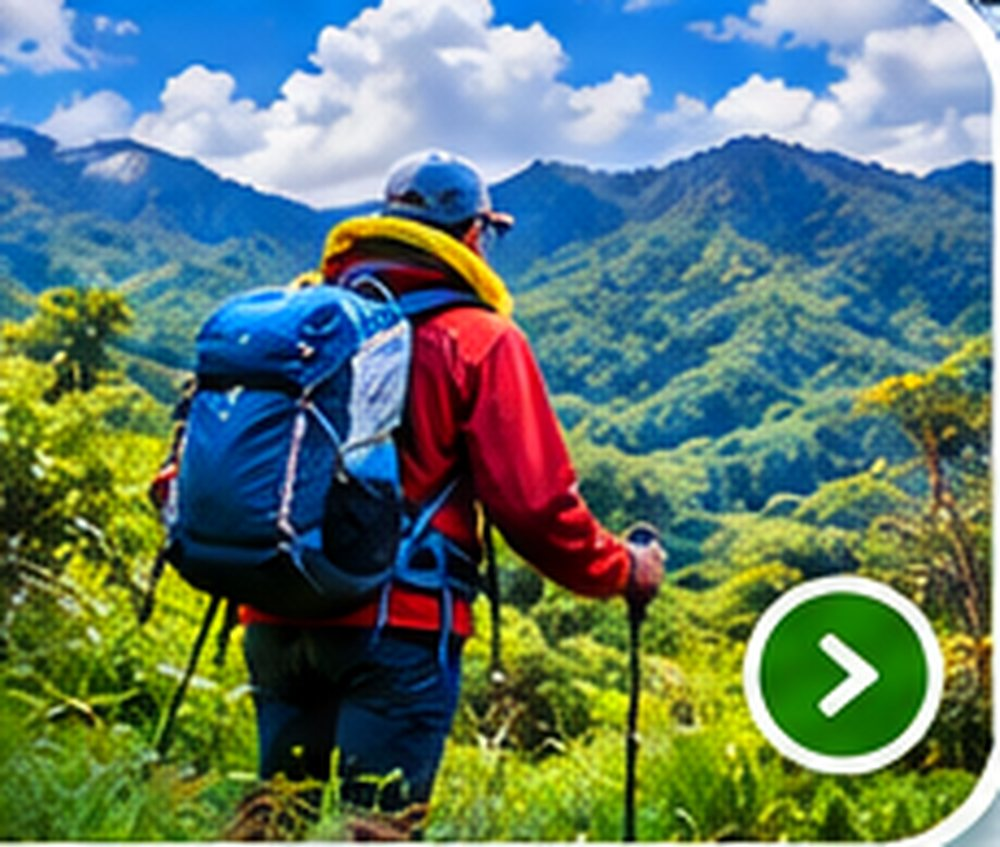

Farallones de Pance
Paisajes de montaña y bosque andino.
Explora montañas, bosques, reservas y caminos junto al río Pance.
← Volver al inicioInformación para conocer el territorio con respeto y apoyar a sus comunidades.

Paisajes de montaña y bosque andino.
Naturaleza y biodiversidad local.
Senderos y contemplación del paisaje.
Cumbre emblemática; verifica acceso y permisos.
Alta montaña; ruta exigente que requiere planificación.
Disfruta el agua y el bosque sin dejar residuos.